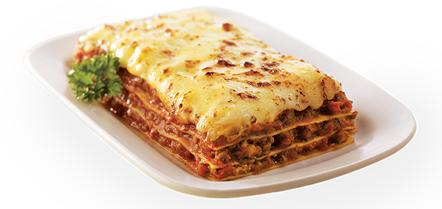

Lasagna

Description
The ultimate comfort food, this lasagna is loaded with meat and cheesy
goodness. Perfectly seasoned Prego sauce ties the whole dish together.
Easy to make, decadent and delicious, this lasagna is perfect for
everything from casual get-togethers to special occasions to Sunday
dinner.
- 3 cups ricotta cheese
- 3/4 cup grated Parmesan cheese
- 2 egg
- 1 pound ground beef
-
1 jar (45 ounces) Prego® Traditional Italian Sauce or two jars (24
ounces each) Prego® Three Cheese Italian Sauce
- 12 cooked lasagna noodles, drained
- 12 ounces shredded mozzarella cheese (about 3 cups)
Steps
-
Spread a thin layer of pasta sauce in the bottom of a baking dish.
- Make a layer of cooked lasagna noodles.
- Spread an even layer of the ricotta cheese mixture.
- Spread an even layer of meat sauce.
- Repeat those layers two times.
-
Top it with a final layer of noodles, sauce, mozzarella, and
parmesan cheese.